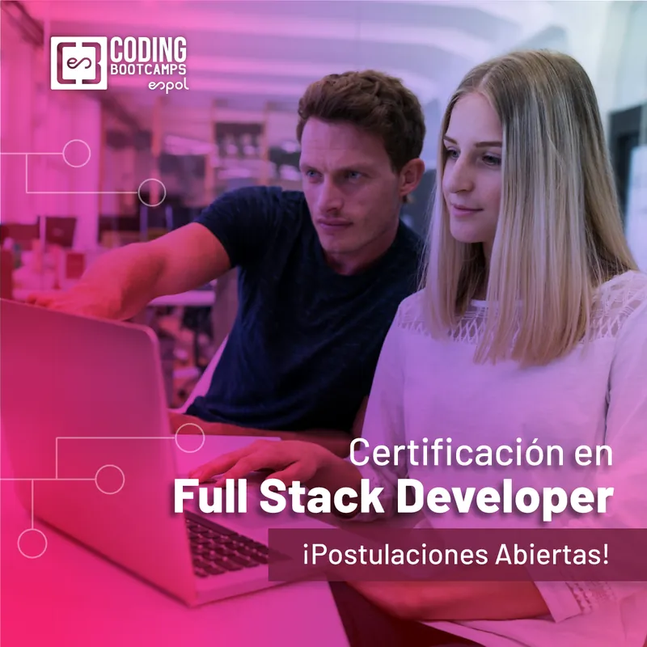
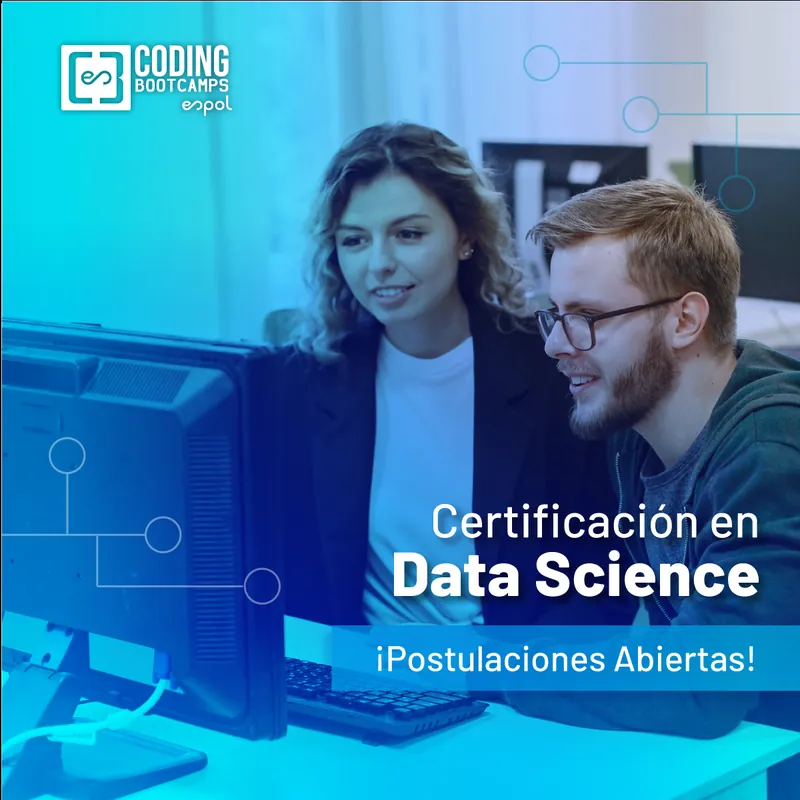

Elige tu ruta hacia la industria tech
Tres programas intensivos de ESPOL con IA aplicada, proyectos reales e instructores de la industria. Elige uno para ver todo el detalle.
Full Stack Development + Applied AI Tools
Programa intensivo para convertirte en desarrollador web, de la mano de profesionales con amplia experiencia en transformación digital en la industria y la academia. Aprende a programar, construye ideas y despliégalas.
- semanas
- 32
- módulos
- 9
- horas
- 300+

- Interfaces y backends. Construye interfaces modernas, responsivas y accesibles, y conéctalas con APIs y arquitecturas backend robustas y escalables.
- IA en todo el stack. Consume modelos de IA generativa, crea asistentes y agentes inteligentes, y usa herramientas de desarrollo asistido por IA.
- Frameworks de la industria. HTML, CSS, JavaScript y React en el frontend; Node con Express, FastAPI y .NET en el backend.
- Código de calidad. Buenas prácticas de diseño web y desarrollo con instructores expertos de la industria.
M0 + 9 módulos, de cero a proyecto real
Cada módulo combina clases, laboratorio y un entregable para tu portafolio.
- AI Frontend Engineer M1–M4
- AI Backend Engineer M5–M9
- M0Propedéutico
Nivelación en JavaScript
- JavaScript
- M1
Web Foundations & Agentic Coding
- HTML
- CSS
- TypeScript
- Claude
- M2
UX/UI with AI & Design Systems
- Lovable
- Tally
- Cursor
- M3
Modern Frameworks & Frontend Architecture
- React
- React Router
- React Query
- Mantine
- Zustand
- Zod
- Firebase
- M4
AI Integration & Cloud Deployment
- GitHub Actions
- M5
Databases: SQL and Query Optimization
- SQL Server
- M6
Backend 101: MERN
- Node.js
- Express
- MongoDB
- Docker
- M7
Backend Pro: Models & Tools
- .NET
- Visual Studio
- M8
Cloud Computing Architecture for Web Applications
- AWS
- M9
Quality Assurance
- OWASP
Transversales
Las usas durante todo el programa.
- Scrum
- QGIS
- FastAPI
- Streamlit
Tu semana
| Día | Hora | Modalidad |
|---|---|---|
| Lunes | 19h00 – 20h30 | Revisión de código |
| Martes | 19h00 – 21h00 | Clase virtual |
| Miércoles | 19h00 – 20h30 | Revisión de código |
| Jueves | 19h00 – 21h00 | Clase virtual |
| Sábado | 09h00 – 12h00 | Clase presencial |
Qué incluye
- 9 módulos dictados por expertos de la industria y la academia.
- Más de 300 horas de instrucción y tutoría.
- Horas de consulta semanales con instructores y ayudantes.
- Laboratorios con plataformas listas para tus proyectos web.
- Portafolio en GitHub que certifica tu experiencia.
- Proyectos con necesidades reales del mercado, en equipo.
- Simulación de entrevistas y asesoría laboral.
- Conexión con la industria en eventos de presentación de proyectos.
Macro Credencial ESPOL
Al terminar recibes la Macro Credencial de ESPOL, que certifica tu formación integral en desarrollo frontend, backend, UX y tecnologías de IA.
Además, el contenido te prepara para estas certificaciones internacionales:
- Google UX Design CertificateDiseño de experiencias centradas en el usuario
- AWS Certified Cloud PractitionerArquitecturas y servicios en la nube
- GitHub ActionsIntegración y despliegue continuo
Así te inscribes
- Entrevista telefónica con un gestor comercial.
- Matrícula: formaliza tu registro en el programa.
- Propedéutico de JavaScript: curso para nivelarte antes de empezar el programa.
- Inicio de clases con el primer módulo core.
Un asesor te contacta y resuelve tus dudas sobre el programa.
Quiero inscribirme ¿Dudas? Escríbenos por WhatsAppData Science + Applied AI Tools
Programa intensivo para trabajar en ciencia de datos: implementa flujos de analítica, construye visualizaciones efectivas, despliega soluciones en la nube y desarrolla modelos con inteligencia artificial para apoyar la toma de decisiones.
- semanas
- 26
- módulos
- M0+8
- horas
- 200+

- Alta demanda. Oportunidades de trabajo en varios sectores de la industria.
- Salario competitivo. Atractivos paquetes de compensación en un campo en crecimiento.
- Habilidades versátiles. Aplicables en diversas industrias para resolver problemas complejos con enfoques analíticos.
- Colaboración. Trabajo interdisciplinario que amplía tu red de contactos.
M0 + 8 módulos, de cero a proyecto real
Cada módulo combina clases, laboratorio y un entregable para tu portafolio.
- M0Propedéutico
Python and Computational Thinking
- Python
- Google Colab
- M1
Business Intelligence
- Power BI
- M2
Databases: SQL and Query Optimization
- SQL Server
- M3
Python for Data Science and Statistics
- pandas
- Google Colab
- M4
Time Series and Intro to Machine Learning
- pandas
- scikit-learn
- M5
Machine Learning and Predictions
- scikit-learn
- PyTorch
- M6
Data Visualization & Storytelling
- Power BI
- Gephi
- M7
Data Experiments: A/B Testing
- Python
- pandas
- M8
Big Data Analytics
- Apache Spark
Transversales
Las usas durante todo el programa.
- Scrum
- QGIS
- FastAPI
- Streamlit
Contenidos: Business Intelligence, Python for Data Science, Introducción a la IA Generativa, DataViz and Storytelling, y Machine Learning – Data Experimentation.
Tu semana
| Día | Hora | Modalidad |
|---|---|---|
| Lunes | 19h00 – 21h00 | Revisión online |
| Martes | 19h00 – 21h00 | Virtual |
| Miércoles | 19h00 – 21h00 | Revisión online |
| Jueves | 19h00 – 21h00 | Virtual |
| Sábado | 09h00 – 12h00 | Presencial |
Qué incluye
- Módulo introductorio y 8 módulos dictados por expertos.
- Más de 200 horas de instrucción y tutoría.
- Horas de consulta semanales con instructores y ayudantes.
- Laboratorios con plataformas listas para tus proyectos.
- Portafolio en GitHub con tus modelos y visualizaciones.
- Proyectos con necesidades reales del mercado, en equipo.
- Simulación de entrevistas y asesoría laboral.
- Conexión con la industria en eventos de presentación de proyectos.
Macro Credencial ESPOL
Al terminar recibes la Macro Credencial de ESPOL, que certifica tu formación en ciencia de datos, machine learning y big data.
Así te inscribes
- Inscripción en línea: completa el formulario de solicitud.
- Entrevista con un asesor de Coding Bootcamps ESPOL.
- Matriculación: formaliza tu registro en el programa.
Un asesor te contacta y resuelve tus dudas sobre el programa.
Quiero inscribirme ¿Dudas? Escríbenos por WhatsAppBusiness Data Analytics + Applied AI Tools
Obtén una ventaja competitiva con casos de estudio del mundo real: analítica para inferir insights, aprendizaje automático y visualización de datos. Diseñado junto a actores de la industria y el departamento de Ciencias de la Computación de ESPOL.
- módulos core
- 8
- horas
- 200+
- Mejores salarios. La experiencia en proyectos reales te permite aspirar a mejores salarios.
- Oportunidades laborales. Módulos de habilidades blandas que te preparan para entrevistas.
- Networking. Conexiones valiosas con actores de la industria.
- Programa competitivo. Expertos de la academia y la industria con amplia experiencia.
8 módulos, de cero a proyecto real
Cada módulo combina clases, laboratorio y un entregable para tu portafolio.
- M0Propedéutico
Python and Computational Thinking
- Python
- M1
Business Intelligence and Storytelling
- Power BI
- M2
Databases: SQL and Query Optimization
- SQL Server
- M3
Python for Business Data Analytics
- pandas
- Google Colab
- M4
Data Governance
- Data Governance
- M5
Data Visualization
- Power BI
- QGIS
- M6
Machine Learning Intro
- scikit-learn
- M7
Digital Marketing Analytics
- ChatGPT
Transversales
Las usas durante todo el programa.
- Scrum
- QGIS
- FastAPI
- Streamlit
Contenidos: fundamentos de Python, SCRUM, AI Tools for Business Intelligence y hojas de cálculo para analítica. Aceleradores de carrera: comunicación asertiva y liderazgo, y Career Services.
Tu semana
| Día | Hora | Modalidad |
|---|---|---|
| Lunes | 19h00 – 21h00 | Virtual |
| Martes | 19h00 – 21h00 | Virtual |
| Miércoles | 19h00 – 21h00 | Virtual |
| Jueves | 19h00 – 21h00 | Virtual |
| Sábado | 09h00 – 12h00 | Presencial |
Los horarios virtuales están sujetos a cambios según la planificación del curso.
Qué incluye
- 8 módulos core y 3 contenidos transversales.
- Más de 200 horas de instrucción y tutoría.
- Horas de consulta semanales con instructores y ayudantes.
- Laboratorios con plataformas listas para tus proyectos.
- Proyectos con necesidades reales del mercado, en equipo.
- Simulación de entrevistas y asesoría laboral.
- Conexión con la industria en eventos de presentación de proyectos.
Macro Credencial ESPOL
Al terminar recibes la Macro Credencial de ESPOL, que certifica tu formación en analítica de datos para la toma de decisiones de negocio.
Así te inscribes
- Inscripción: completa el formulario de aplicación.
- Entrevista con el coordinador de admisiones.
- Matriculación: formaliza tu registro en el programa.
Un asesor te contacta y resuelve tus dudas sobre el programa.
Quiero inscribirme ¿Dudas? Escríbenos por WhatsApp